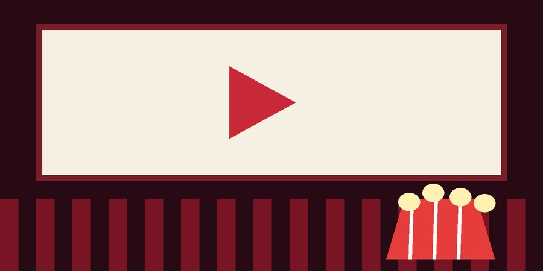

My Top 5 Movies
- Black Panther (2018): African culture, pride and technology on one big screen.
- The Pursuit of Happyness (2006): proof that persistence pays off, even when things look impossible.
- Interstellar (2014): big science ideas wrapped in a very human story.
- Inception (2010): a clever puzzle that rewards you for paying attention.
- The Social Network (2010): shows how an idea and some code can change the world.
My Favourite Playlist
The soundtrack to my study sessions:
Listen on YouTube